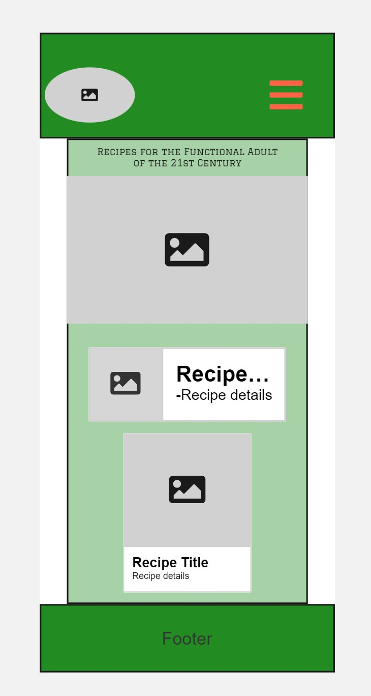
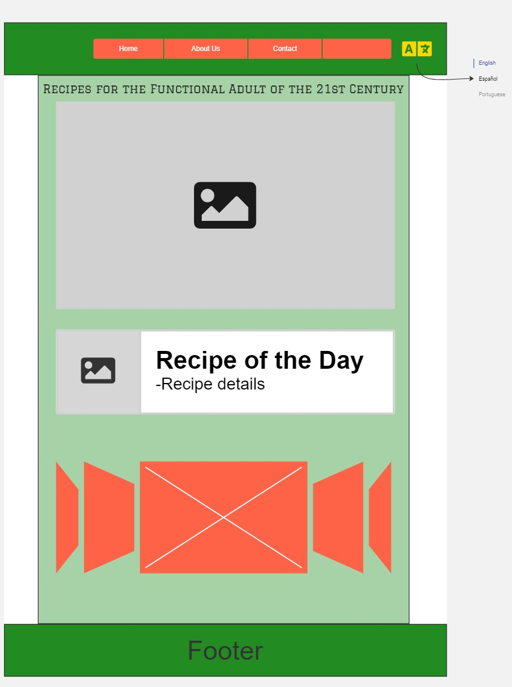

Site Name
Site Name: Recipes for the Functional Adult of the 21st Century
Reason for Name: This name represents a collection of practical and modern recipes designed to help busy adults learn to cook efficiently and effectively in the 21st century.
Site Purpose
The site provides a collection of various recipes categorized by type (e.g., appetizers, main courses, desserts). Each recipe includes ingredients, step-by-step instructions, and cooking tips. The site also features a form for users to submit their own recipes.
Scenarios
Scenario 1: What are some easy-to-make recipes for beginners?
Scenario 2: How can I submit my own recipe to be featured on the site?
Color Schema
Primary Color: Tomato Red (#FF6347) - used for headers, buttons, and accents.
Secondary Color: Basil Green (#228B22) - used for backgrounds and secondary accents.
Typography
Primary Font: Roboto - used for body text and general content.
Secondary Font: Montserrat - used for headings and titles.
Wireframe
Below are the wireframe sketches for the mobile and desktop views of the home page:
 